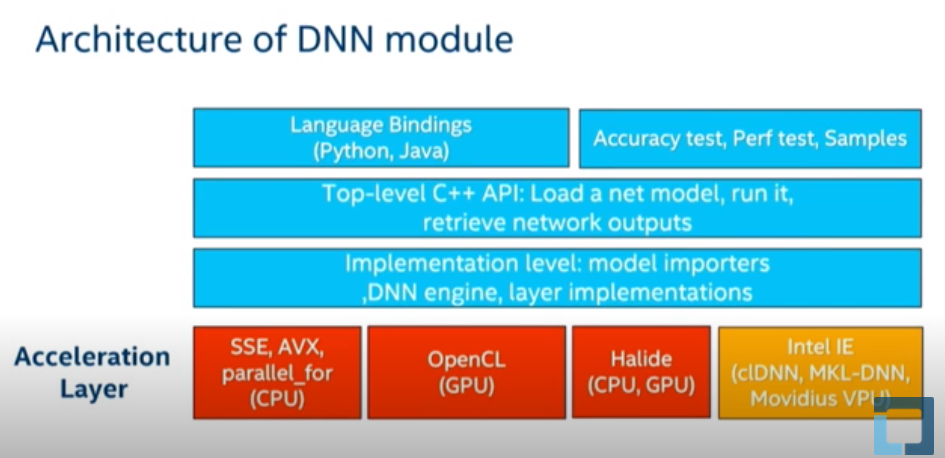

OpenCV 的DNN module 只能用于推理阶段。
https://github.com/opencv/opencv/wiki/Deep-Learning-in-OpenCV
优势
- 轻量级
- 方便
- 通用
- 适用于CPU/GPU 设备
- 适用于Android、Linux、Win、Mac 系统
架构与机理

1. 基本步骤
1.1. 加载模型
因为OpenCV只支持推理，所以首先你需要有一个训练好的模型。OpenCV支持所有主流框架的大部分模型。从OpenCV的readNet系列函数就可以看出来：
net=cv2.dnn.readNetFromCaffe() net=cv2.dnn.readNetFromTensorflow() net=cv2.dnn.readNetFromTorch() net=cv2.dnn.readNetFromDarknet() net=cv2.dnn.readNetFromONNX() net=cv2.dnn.readNetFromModelOptimizer()
1.2. 图像预处理
在OpenCV中，输入给模型的图像需要首先被构建成一个4维的Blob，看到Blob这个词感觉是收到了Caffe的影响。在构建Blob的时候会做一些诸如resize、归一化和缩放之类的简单预处理。OpenCV提供的函数为:
blob=cv2.dnn.blobFromImage(image, scalefactor=None, size=None, mean=None, swapRB=None, crop=None, ddepth=None) type(blob) >>> np.array blob.shape >>> (1,w,h,4)
这个函数在构建Blob的之前会先做如下计算：
- (image - mean) * scalefactor。
# 功能差不多 blob=cv2.dnn.blobFromImages( image, scalefactor=1.0, size, mean, swapRB=True,crop=False,ddepth = CV_32F )
参数说明
1. image :这是传入的，需要进行处理的图像。
2. scalefactor: 执行完减均值后，需要缩放图像，默认是1，需要注意，$scalefactor = \frac{1}{\sigma}1 / $,这是真正乘上的值。
-
size,这是神经网络，真正支持输入的值。 -
mean, 这是我们要减去的均值，可以是R,G,B均值三元组，或者是一个值，每个通道都减这值。如果执行减均值，通道顺序是RGB。 如果，输入图像通道顺序是BGR，那么请确保swapRB = True，交换通道。 -
swapRB, swap Blue and Red channels - 干的是
cv2.cvtColor(image, cv2.COLOR_BGR2RGB)的事情。 - OpenCV认为图像通道顺序是BGR，而减均值时顺序是RGB，为了解决这个矛盾，设置swapRB=True即可。
crop- 如果
crop==True，则调整输入图像的大小，使调整大小后的一侧等于相应的尺寸，另一侧等于或大于。然后，从中心进行裁剪。 - 如果
crop==False，则直接调整大小而不进行裁剪并保留纵横比。 ddepth, 输出blob的深度，选则cv2.CV_32Forcv2.CV_8U。
1.3. 模型推理
模型推理过程就是神经网络模型进行一次前向传播，在OpenCV中，用以下可读性非常强的两行代码即可完成：
net.setInput(blob) output = net.forward()
把第一节构建的blob输入给模型，然后执行一次前向传播。
得到输出output再做一些处理使得我们可以更好的可视化图像